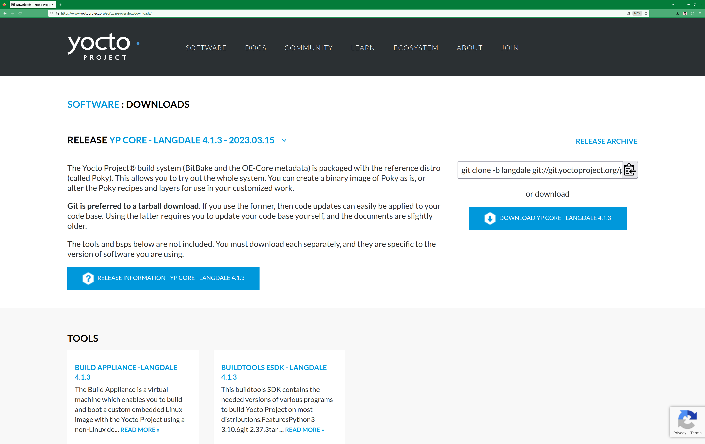

2 The Yocto Project Development Environment
This chapter takes a look at the Yocto Project development environment. The chapter provides Yocto Project Development environment concepts that help you understand how work is accomplished in an open source environment, which is very different as compared to work accomplished in a closed, proprietary environment.
Specifically, this chapter addresses open source philosophy, source repositories, workflows, Git, and licensing.
2.1 Open Source Philosophy
Open source philosophy is characterized by software development directed by peer production and collaboration through an active community of developers. Contrast this to the more standard centralized development models used by commercial software companies where a finite set of developers produces a product for sale using a defined set of procedures that ultimately result in an end product whose architecture and source material are closed to the public.
Open source projects conceptually have differing concurrent agendas, approaches, and production. These facets of the development process can come from anyone in the public (community) who has a stake in the software project. The open source environment contains new copyright, licensing, domain, and consumer issues that differ from the more traditional development environment. In an open source environment, the end product, source material, and documentation are all available to the public at no cost.
A benchmark example of an open source project is the Linux kernel, which was initially conceived and created by Finnish computer science student Linus Torvalds in 1991. Conversely, a good example of a non-open source project is the Windows family of operating systems developed by Microsoft Corporation.
Wikipedia has a good historical description of the Open Source Philosophy. You can also find helpful information on how to participate in the Linux Community here.
2.2 The Development Host
A development host or Build Host is key to using the Yocto Project. Because the goal of the Yocto Project is to develop images or applications that run on embedded hardware, development of those images and applications generally takes place on a system not intended to run the software --- the development host.
You need to set up a development host in order to use it with the Yocto Project. Most find that it is best to have a native Linux machine function as the development host. However, it is possible to use a system that does not run Linux as its operating system as your development host. When you have a Mac or Windows-based system, you can set it up as the development host by using an OCI container (using Docker or Podman). Once you take the steps to set up container, you effectively have access to a shell environment that is similar to what you see when using a Linux-based development host.
If your development host is going to be a system that runs a Linux distribution, you must still take steps to prepare the system for use with the Yocto Project. You need to be sure that the Linux distribution on the system is one that supports the Yocto Project. You also need to be sure that the correct set of host packages are installed that allow development using the Yocto Project. For the steps needed to set up a development host that runs Linux, see the "Setting Up a Native Linux Host" section in the Yocto Project Development Tasks Manual.
Once your development host is set up to use the Yocto Project, there are several ways of working in the Yocto Project environment:
Command Lines, BitBake, and Shells: Traditional development in the Yocto Project involves using the OpenEmbedded Build System, which uses BitBake, in a command-line environment from a shell on your development host. You can accomplish this from a host that is a native Linux machine or from a container. Either way, you create, modify, and build images and applications all within a shell-based environment using components and tools available through your Linux distribution and the Yocto Project.
For a general flow of the build procedures, see the "Building a Simple Image" section in the Yocto Project Development Tasks Manual.
Board Support Package (BSP) Development: Development of BSPs involves using the Yocto Project to create and test layers that allow easy development of images and applications targeted for specific hardware. To development BSPs, you need to take some additional steps beyond what was described in setting up a development host.
The Yocto Project Board Support Package (BSP) Manual provides BSP-related development information. For specifics on development host preparation, see the "Preparing Your Build Host to Work With BSP Layers" section in the Yocto Project Board Support Package (BSP) Developer's Guide.
Kernel Development: If you are going to be developing kernels using the Yocto Project you likely will be using
devtool. A workflow usingdevtoolmakes kernel development quicker by reducing iteration cycle times.The Yocto Project Linux Kernel Development Manual provides kernel-related development information. For specifics on development host preparation, see the "Preparing the Build Host to Work on the Kernel" section in the Yocto Project Linux Kernel Development Manual.
Using Toaster: The other Yocto Project development method that involves an interface that effectively puts the Yocto Project into the background is Toaster. Toaster provides an interface to the OpenEmbedded build system. The interface enables you to configure and run your builds. Information about builds is collected and stored in a database. You can use Toaster to configure and start builds on multiple remote build servers.
For steps that show you how to set up your development host to use Toaster and on how to use Toaster in general, see the Toaster User Manual.
Using the VSCode Extension: You can use the Yocto Project BitBake extension for Visual Studio Code to start your BitBake builds through a graphical user interface.
Learn more about the VSCode Extension on the extension's marketplace page.
2.3 Yocto Project Source Repositories
The Yocto Project team maintains complete source repositories for all Yocto Project files at https://git.yoctoproject.org/. This web-based source code browser is organized into categories by function such as IDE Plugins, Matchbox, Poky, Yocto Linux Kernel, and so forth. From the interface, you can click on any particular item in the "Name" column and see the URL at the bottom of the page that you need to clone a Git repository for that particular item. Having a local Git clone of these repositories allows you to make changes, contribute to the history, and ultimately enhance the Yocto Project's tools, Board Support Packages, and so forth.
For any supported release of Yocto Project, you can also go to the Yocto Project Website and select the "Releases" item from the "Development" menu and get a released tarball of the repositories, any supported BSP tarball, or Yocto Project tools. Unpacking these tarballs gives you a snapshot of the released files.
Nota
The recommended method for setting up the Yocto Project is to use Git to create a local copy of the upstream repositories.
Be sure to always work in matching branches for both the selected BSP repository, the OpenEmbedded-Core (OE-Core) and BitBake repositories. For example, if you have checked out the "blacksail" branch of OpenEmbedded-Core (OE-Core) and you are going to use
meta-intel, be sure to check out the "blacksail" branch ofmeta-intel.
In summary, here is where you can get the project files needed for development:
Source Repositories: This area contains BitBake, OpenEmbedded-Core (OE-Core), Yocto documentation and other metadata layers. You can create local copies of Git repositories for each of these areas.

Releases page: The Yocto Project website includes a "Releases" page accessible through the "Development" menu that allows you to download any Yocto Project release, tool, and Board Support Package (BSP) in tarball form. The hyperlinks point to the tarballs under https://downloads.yoctoproject.org/releases/yocto/.


2.4 Git Workflows and the Yocto Project
Developing using the Yocto Project likely requires the use of Git. Git is a free, open source distributed version control system used as part of many collaborative design environments. This section provides workflow concepts using the Yocto Project and Git. In particular, the information covers basic practices that describe roles and actions in a collaborative development environment.
Nota
If you are familiar with this type of development environment, you might not want to read this section.
The Yocto Project files are maintained using Git in "branches" whose Git histories track every change and whose structures provide branches for all diverging functionality. Although there is no need to use Git, many open source projects do so.
For the Yocto Project, a key individual called the "maintainer" is responsible for the integrity of the development branch of a given Git repository. The development branch is the "upstream" repository from which final or most recent builds of a project occur. The maintainer is responsible for accepting changes from other developers and for organizing the underlying branch structure to reflect release strategies and so forth.
Nota
For information on finding out who is responsible for (maintains) a particular area of code in the Yocto Project, see the "Identifying the component" section of the Yocto Project and OpenEmbedded Contributor Guide.
The Yocto Project Git repositories may also have upstream
contribution Git repositories suffixed with -contrib. You can see all the
branches of these repositories using the web interface of the
Source Repositories.
These branches hold changes (commits) to the project that have
been submitted or committed by the Yocto Project development team and by
community members who contribute to the project. The maintainer
determines if the changes are qualified to be moved from the "contrib"
branches into the "master" branch of the Git repository.
Developers (including contributing community members) create and maintain cloned repositories of upstream branches. The cloned repositories are local to their development platforms and are used to develop changes. When a developer is satisfied with a particular feature or change, they "push" the change to the appropriate "contrib" repository.
Developers are responsible for keeping their local repository up-to-date with whatever upstream branch they are working against. They are also responsible for straightening out any conflicts that might arise within files that are being worked on simultaneously by more than one person. All this work is done locally on the development host before anything is pushed to a "contrib" area and examined at the maintainer's level.
There is a somewhat formal method by which developers commit changes and push them into the "contrib" area and subsequently request that the maintainer include them into an upstream branch. This process is called "submitting a patch" or "submitting a change." For information on submitting patches and changes, see the "Contributing Changes to a Component" section in the Yocto Project and OpenEmbedded Contributor Guide.
In summary, there is a single point of entry for changes into the development branch of the Git repository, which is controlled by the project's maintainer. A set of developers independently develop, test, and submit changes to "contrib" areas for the maintainer to examine. The maintainer then chooses which changes are going to become a permanent part of the project.

While each development environment is unique, there are some best practices or methods that help development run smoothly. The following list describes some of these practices. For more information about Git workflows, see the workflow topics in the Git Community Book.
Make Small Changes: It is best to keep the changes you commit small as compared to bundling many disparate changes into a single commit. This practice not only keeps things manageable but also allows the maintainer to more easily include or refuse changes.
Make Complete Changes: It is also good practice to leave the repository in a state that allows you to still successfully build your project. In other words, do not commit half of a feature, then add the other half as a separate, later commit. Each commit should take you from one buildable project state to another buildable state.
Use Branches Liberally: It is very easy to create, use, and delete local branches in your working Git repository on the development host. You can name these branches anything you like. It is helpful to give them names associated with the particular feature or change on which you are working. Once you are done with a feature or change and have merged it into your local development branch, simply discard the temporary branch.
Merge Changes: The
git mergecommand allows you to take the changes from one branch and fold them into another branch. This process is especially helpful when more than a single developer might be working on different parts of the same feature. Merging changes also automatically identifies any collisions or "conflicts" that might happen as a result of the same lines of code being altered by two different developers.Manage Branches: Because branches are easy to use, you should use a system where branches indicate varying levels of code readiness. For example, you can have a "work" branch to develop in, a "test" branch where the code or change is tested, a "stage" branch where changes are ready to be committed, and so forth. As your project develops, you can merge code across the branches to reflect ever-increasing stable states of the development.
Use Push and Pull: The push-pull workflow is based on the concept of developers "pushing" local commits to a remote repository, which is usually a contribution repository. This workflow is also based on developers "pulling" known states of the project down into their local development repositories. The workflow easily allows you to pull changes submitted by other developers from the upstream repository into your work area ensuring that you have the most recent software on which to develop. The Yocto Project has two scripts named
create-pull-requestandsend-pull-requestthat ship with the release to facilitate this workflow. You can find these scripts in thescriptsfolder of OpenEmbedded-Core (OE-Core). For information on how to use these scripts, see the "Using Scripts to Push a Change Upstream and Request a Pull" section in the Yocto Project and OpenEmbedded Contributor Guide.Patch Workflow: This workflow allows you to notify the maintainer through an email that you have a change (or patch) you would like considered for the development branch of the Git repository. To send this type of change, you format the patch and then send the email using the Git commands
git format-patchandgit send-email. For information on how to use these scripts, see the "Contributing Changes to a Component" section in the Yocto Project and OpenEmbedded Contributor Guide.
2.5 Git
The Yocto Project makes extensive use of Git, which is a free, open source distributed version control system. Git supports distributed development, non-linear development, and can handle large projects. It is best that you have some fundamental understanding of how Git tracks projects and how to work with Git if you are going to use the Yocto Project for development. This section provides a quick overview of how Git works and provides you with a summary of some essential Git commands.
Nota
For more information on Git, see https://git-scm.com/docs.
If you need to download Git, it is recommended that you add Git to your system through your distribution's "software store" (e.g. for Ubuntu, use the Ubuntu Software feature). For the Git download page, see https://git-scm.com/download.
2.5.2 Basic Commands
Git has an extensive set of commands that lets you manage changes and perform collaboration over the life of a project. Conveniently though, you can manage with a small set of basic operations and workflows once you understand the basic philosophy behind Git. You do not have to be an expert in Git to be functional. A good place to look for instruction on a minimal set of Git commands is here.
The following list of Git commands briefly describes some basic Git operations as a way to get started. As with any set of commands, this list (in most cases) simply shows the base command and omits the many arguments it supports. See the Git documentation for complete descriptions and strategies on how to use these commands:
git init: Initializes an empty Git repository. You cannot use Git commands unless you have a
.gitrepository.git clone: Creates a local clone of a Git repository that is on equal footing with a fellow developer's Git repository or an upstream repository.
git add: Locally stages updated file contents to the index that Git uses to track changes. You must stage all files that have changed before you can commit them.
git commit: Creates a local "commit" that documents the changes you made. Only changes that have been staged can be committed. Commits are used for historical purposes, for determining if a maintainer of a project will allow the change, and for ultimately pushing the change from your local Git repository into the project's upstream repository.
git status: Reports any modified files that possibly need to be staged and gives you a status of where you stand regarding local commits as compared to the upstream repository.
git checkout branch-name: Changes your local working branch and in this form assumes the local branch already exists. This command is analogous to "cd".
git checkout -b working-branch upstream-branch: Creates and checks out a working branch on your local machine. The local branch tracks the upstream branch. You can use your local branch to isolate your work. It is a good idea to use local branches when adding specific features or changes. Using isolated branches facilitates easy removal of changes if they do not work out.
git branch: Displays the existing local branches associated with your local repository. The branch that you have currently checked out is noted with an asterisk character.
git branch -D branch-name: Deletes an existing local branch. You need to be in a local branch other than the one you are deleting in order to delete branch-name.
git pull --rebase: Retrieves information from an upstream Git repository and places it in your local Git repository. You use this command to make sure you are synchronized with the repository from which you are basing changes (e.g. the "blacksail" branch). The
--rebaseoption ensures that any local commits you have in your branch are preserved at the top of your local branch.git push repo-name local-branch:upstream-branch: Sends all your committed local changes to the upstream Git repository that your local repository is tracking (e.g. a contribution repository). The maintainer of the project draws from these repositories to merge changes (commits) into the appropriate branch of project's upstream repository.
git merge: Combines or adds changes from one local branch of your repository with another branch. When you create a local Git repository, the default branch may be named "main". A typical workflow is to create a temporary branch that is based off "main" that you would use for isolated work. You would make your changes in that isolated branch, stage and commit them locally, switch to the "main" branch, and then use the
git mergecommand to apply the changes from your isolated branch into the currently checked out branch (e.g. "main"). After the merge is complete and if you are done with working in that isolated branch, you can safely delete the isolated branch.git cherry-pick commits: Choose and apply specific commits from one branch into another branch. There are times when you might not be able to merge all the changes in one branch with another but need to pick out certain ones.
gitk: Provides a GUI view of the branches and changes in your local Git repository. This command is a good way to graphically see where things have diverged in your local repository.
Nota
You need to install the gitk package on your development system to use this command.
git log: Reports a history of your commits to the repository. This report lists all commits regardless of whether you have pushed them upstream or not.
git grep: Looks for specified patterns in the tracked files in the working tree, blobs registered in the working tree, or blobs in given tree objects.
git diff: Displays line-by-line differences between a local working file and the same file as understood by Git. This command is useful to see what you have changed in any given file.
git clean: Cleans the working tree by recursively removing files that are not under version control, starting from the current directory.
git reset: Resets the current HEAD to the specified state.
2.6 Licensing
Because open source projects are open to the public, they have different licensing structures in place. License evolution for both Open Source and Free Software has an interesting history. If you are interested in this history, you can find basic information here:
In general, the Yocto Project is broadly licensed under the Massachusetts Institute of Technology (MIT) License. MIT licensing permits the reuse of software within proprietary software as long as the license is distributed with that software. Patches to the Yocto Project follow the upstream licensing scheme. You can find information on the MIT license here.
When you build an image using the Yocto Project, the build process uses
a known list of licenses to ensure compliance. You can find this list in
OpenEmbedded-Core (OE-Core) at meta/files/common-licenses. Once the
build completes, the list of all licenses found and used during that build
are kept in the Build Directory at tmp/deploy/licenses.
If a module requires a license that is not in the base list, the build process generates a warning during the build. These tools make it easier for a developer to be certain of the licenses with which their shipped products must comply. However, even with these tools it is still up to the developer to resolve potential licensing issues.
The base list of licenses used by the build process is a combination of the Software Package Data Exchange (SPDX) list and the Open Source Initiative (OSI) projects. SPDX Group is a working group of the Linux Foundation that maintains a specification for a standard format for communicating the components, licenses, and copyrights associated with a software package. OSI is a corporation dedicated to the Open Source Definition and the effort for reviewing and approving licenses that conform to the Open Source Definition (OSD).
You can find a list of the combined SPDX and OSI licenses that the Yocto Project uses in the meta/files/common-licenses directory in OpenEmbedded-Core (OE-Core).
For information that can help you maintain compliance with various open source licensing during the lifecycle of a product created using the Yocto Project, see the "Maintaining Open Source License Compliance During Your Product's Lifecycle" section in the Yocto Project Development Tasks Manual.